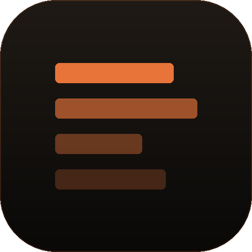
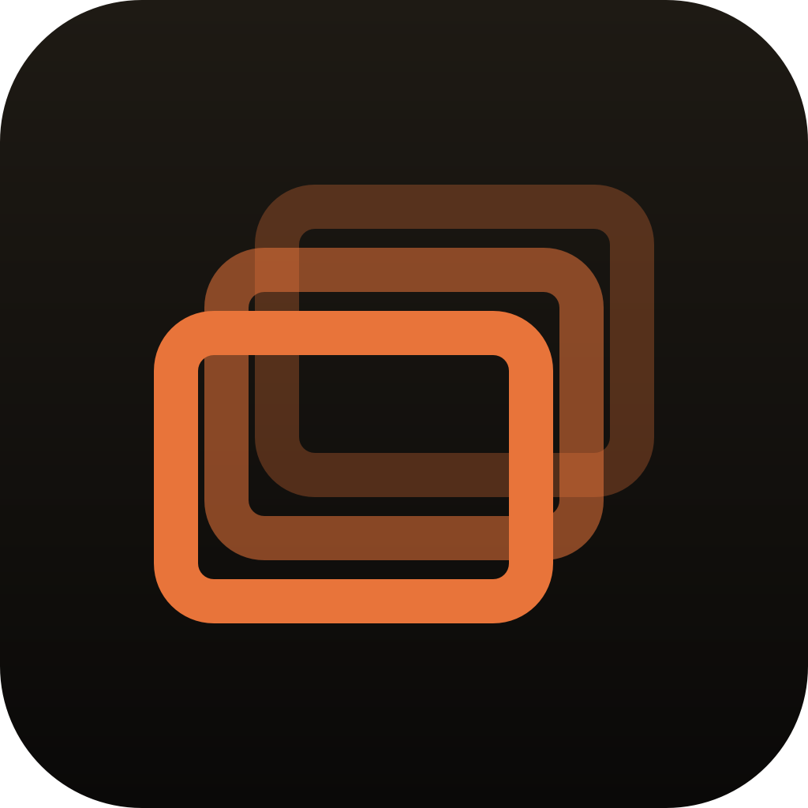

The three tiers were painted back → mid → front with plain alpha compositing. Correct Porter-Duff, wrong mark: the 30% back rect shows through the 55% mid rect, so every crossing lights up as a denser, more saturated patch. Fixed by knocking each tier out wherever a tier in front of it covers — front and mid are immutable in colour and opacity anywhere they're seen, back sits behind.
Four bright nodes where the back rect crosses the mid rect — a fourth tone the palette never specified.
Three flat tiers. Each tone appears exactly once, at exactly its own value.
Back stroke × mid stroke → a third, brighter tone that belongs to no tier.
The back stroke stops at the mid stroke's edge. Antialiasing intact — the clip's partial coverage is exactly 1 − covering coverage, so no seam.
The tray generator has the identical defect in SVG form (stroke-opacity 0.3 / 0.55 layered). Because the template PNG is alpha-only and macOS tints it, the compounded alpha at each crossing renders as a brighter node in the menubar.
The tile is untouched — the background block in the patched generator is byte-identical to the shipped one, and the shipped PNG still samples to the same ramp as PwrAgent's icon at every stop. What actually changed is that a fourth orange left the palette.


| tile gradient, sampled at x=6% | PwrAgent | PwrSnap shipped | PwrSnap patched |
|---|---|---|---|
| y = 10% | #1c1813 | #1c1813 | #1c1813 |
| y = 50% | #14110e | #14110e | #14110e |
| y = 90% | #0c0a09 | #0c0b09 | #0c0b09 |
| dominant mark orange | #e8743a | #e8743a | #e8743a |
| phantom crossing tone #a5552c | — | 3,135 px | 0 px |
#a5552c is mid-over-back-over-tile — 0.55×accent composited onto 0.3×accent. It is brighter than the mid tier's own #884725 and passes a “saturated orange” filter the real mid tier fails, which is why the crossings read as a lighter wash sitting on the tile. Removing it is the whole visual delta; the ramp underneath never moved.
CGPaths; each tier is stroked inside a clip built from copy(strokingWithWidth:) outlines of the tiers in front of it (bounds + ring, even-odd, intersected sequentially). Colours moved off NSColor onto CGContext.setStrokeColor(red:…), which is DeviceRGB — same #e8743a, no calibrated→device drift risk.userSpaceOnUse luminance masks (ps-behind-front, ps-behind-mid-front) cut the front/mid stroke bands out of the tiers behind. Geometry, stroke width and both variants unchanged.AppIcons.jsx / FoMark) already uses three opaque tints and never had this bug.Verify per the existing solution doc: sample build/icon.png — dominant orange still #e8743a, gradient still #1c1813 → #0c0b09, and the crossings now sample to the mid tier's flat value rather than a fourth tone.